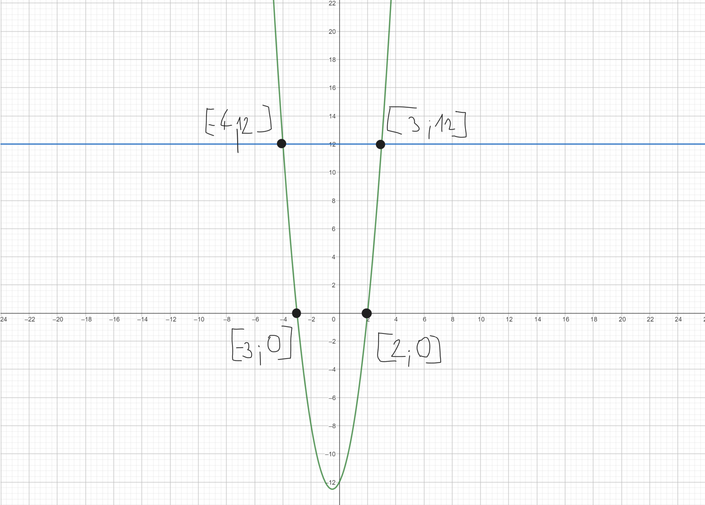
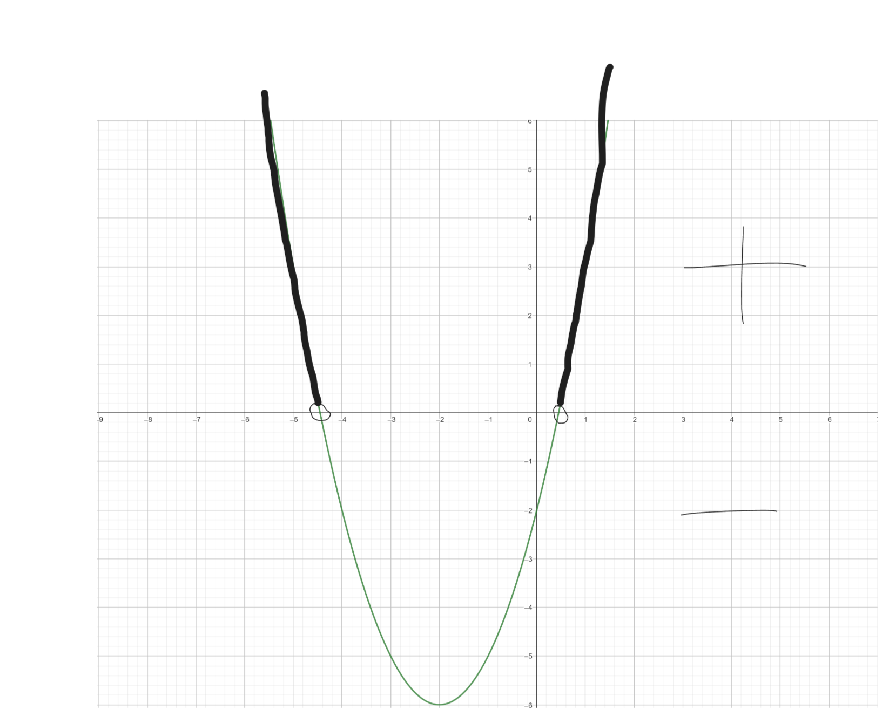
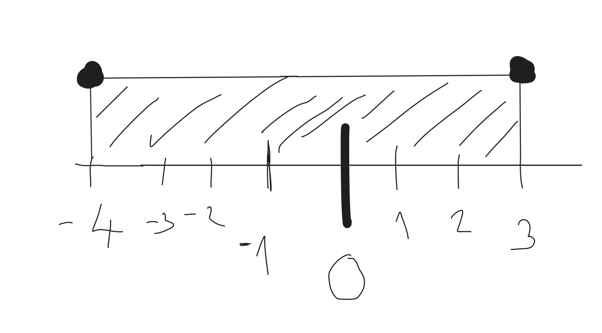
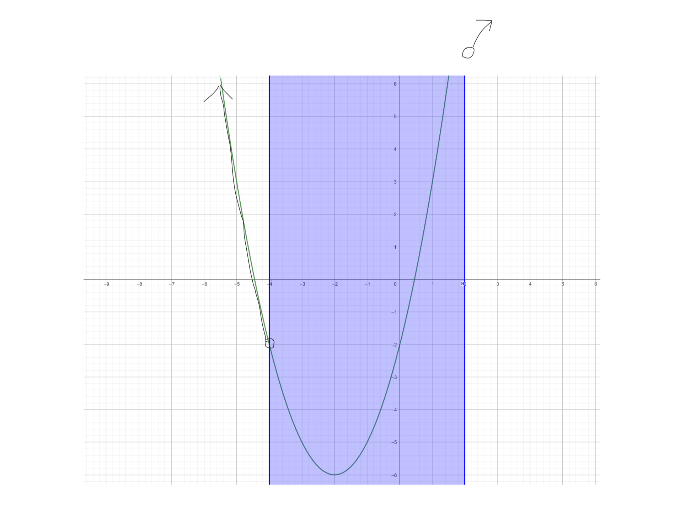
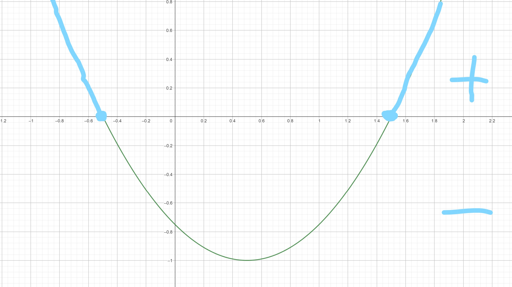

(3b) Binární operace \(*\) je definovaná jako \(a*b=\frac{a+b}{a-b}\). Určete hodnotu neznámé \(x\) tak, aby \((2*x)*3=3\)
\[x \neq 2 \land x \neq 1\] \[\frac{\frac{2+x}{2-x}+3}{\frac{2+x}{2-x}-3}=3\] \[\frac{2+x}{2-x}+3=3*(\frac{2+x}{2-x}-3)\] \[\frac{2+x}{2-x}+3=-9+\frac{6+3x}{2-x}\] \[2+x+3*(2-x)=-9*(2-x)+6+3x\] \[2+x+6-3x=-18-9x+6+3x\] \[8-2x=12x-12\] \[20=14x\] \[\frac{20}{14}=x\] \[\frac{10}{7}=x\]
(3b) Při koupi dvou párů bot dostaneme slevu 30% na druhý pár. Chceme koupit boty za 1800 a 1500 korun. Jaká je nejmenší cena za kterou můžeme oba páry získat?
Dražší boty získají větší slevu v korunách. \[1800*0,7=1260\] \[1500+1260=2760\]
(3b) Určete jakému výrazu se rovná druhá odmocnina podílu čísla x a jeho převrácené hodnoty.
\[\frac{x}{\frac{1}{x}}=\sqrt{x*x}=\sqrt{x^2}=|x|\]
(7b) Mějme dvě čísla zapsaná v pětkové soustavě: \(4112_5\) a \(2443_5\). Vyjádřete jejich rozdíl také v pětkové soustavě.
\[ \begin{array}{ccccc} \ & 4 & 1 & 1 & 2_5 \\ \ - & 2 & 4 & 4 & 3_5\\ \hline\\ & 1 & 1 & 1 & 4_5\\ \end{array} \]
(7b) Jestliže \(y=2x^2+2x-12\), pak \(y \in \langle 0, 12 \rangle \) právě pro
\[D = 4-4*(-12)*2 = 4 + 96 = 100\] \[x_1 = \frac{-2-10}{4}=\frac{-12}{4}=-3\] \[x_2 = \frac{-2+10}{4}=\frac{8}{4}=2\]
Rozklad kvadratického trojčlenu na součin: \[y=2*(x-2)*(x+3)\]
(7b) Jsou dány dvě množiny \(A= \{ x|x^2+4x-2>0 \}\) a \(B = \{ x| \vert x+1 \vert \leq 3\}\). Rozdílem množin A mínus B je
Množina A: \[x^2+4x-2=0\] \[D=16-4*(-2)=24\] \[x_1=\frac{-4+2\sqrt{6}}{2}=-2+\sqrt{6}\] \[x_2=\frac{-4-2\sqrt{6}}{2}=-2-\sqrt{6}\]
Množina B:
Rozdíl možin \(A-B\)
(7b) Mezi kořený kvadratické rovnice \(x^2-30x+81=0\) vložte čtyři čísla tak, aby spolu s vypočtenými kořeny tvořila šest po sobé jdou cích členů geometrické posloupnosti. Rozhodněte, které tvrzení je pravdivé.
\[D=900-4*1*81=900-324=576\] \[x_1=\frac{30+24}{2}=\frac{54}{2}=27\] \[x_2=\frac{30-24}{2}=\frac{6}{2}=3\] \[ \begin{array}{ccccc} \ 3 & . & . & . & . & 27 \\ \ a_1 & a_2 & a_3 & a_4 & a_5 & a_6\\ \end{array} \]
Podle vzorce: \[a_n=a_1+q^{n-1}\] \[a_6=a_1*q^5\] \[27=3*q^5\] \[q^5=9\] \[q=\sqrt[5]{9}\]
\[a_4=3*q^{\frac{3}{5}}\] \[a_4=3^1*3^{\frac{6}{5}}\] \[a_4=3^1*3^1*3^{\frac{1}{5}}\] \[a_4=9*3^{\frac{1}{5}}\] \[a_4=9\sqrt[5]{3}\]
(7b) Za nákup 1,5 kg mandarinek a 3,5 kg pomerančů jsme zaplatili celkem 185 korun. Kilo pomerančů stojí o třetinu více než kilo mandarinek. Rozhodněte, které tvrzení je pravdivé.
\[1,5x+\frac{7}{2}*\frac{4}{3}x=185\] \[37x=1110\] \[x=30\]
(7b) Nalezněte obor hodnot funkce \(f(x)=2 \sin (3x-\frac{π}{2})-4\).
\(2\sin\) nám říká, že obor hodnot funkce sinus bude 2x větší (sin(x) obor hodnot je \(\langle1,-1\rangle\))
\(-4\) posun celé funkce o -4 na ose y
\(3x-\frac{π}{2}=>3x\) funkce sinus se nám v intervalu \(\langle0,2π\rangle\) objeví 3x, ale k určení oboru hodnot nám to nepomůže
\(3x-\frac{π}{2}=>x=\frac{π}{2}\) posun grafu o \(\frac{π}{2}\) na ose x, ale k určení oboru hodnot nám to nepomůže
Takže posun o -4 a budeme mít při základní funkci sin(x) obor hodnot \(\langle-3,-5\rangle\), potom zvětšíme funkci 2x obor hodnot je \(\langle-2,-6\rangle\)
(7b) Které z následujících tvrzení o definičním oboru funkce \(f(x) = \sqrt{\frac{1}{x+2}}+\sqrt{\frac{1}{x^2-x-\frac{3}{4}}}\)
I. \[x+2 \neq 0\] \[x \neq -2\] \[x \gt -2\]
II. \[x^2-x-\frac{3}{4}=0\] \[4x^2-4x-3=0\] \[D=16-4*4*(-3)=16+48=64\] \[x_1=\frac{4+8}{8}=\frac{12}{8}=1,5\] \[x_2=\frac{4-8}{8}=\frac{-4}{8}=-0,5\]
Průnik je: \[x \in \langle -2,-\frac{1}{2} \rangle \cup \langle \frac{3}{2} , \infty)\]
(7b) Kolika různými způsoby lze ze 7 mužů a 3 žen vybrat trojici tak, aby v ní byla nejvýše jedna žena?
Nejvýše jedna žena \( \Rightarrow\) 1 a žádná
1: \[\binom{7}{2}=21\] \[21 * 3 = 63\]
0: \[\binom{7}{3}=35\]
\[63 + 35 = 98\]
(7b) Rozhodněte, které tvrzení o řešeních rovnice \(\frac{\log_{3}(6x-2)}{\log_{3}(x-3)}=2\) je pravdivé.
\[6x-2>0 \Rightarrow x>\frac{1}{3}\] \[x-3>0 \Rightarrow x>3\]
\[\log_{3}(6x-2)=\log_{3}(x-3)^2\] \[6x-2=(x-3)^2\] \[6x-2=x^2-6x+9\] \[0=x^2-12x+11\] \[D=144-4*11=100\] \[x_1=\frac{12+10}{2}=\frac{22}{2}=11 ✔\] \[x_1=\frac{12-10}{2}=\frac{2}{2}=1 ×\]
(7b) Určete hodnoty reálného parametru p tak, aby rovnice \(p^2(2x-8)+p(x^2-6x+8)+4x-x^2=0\) méla jediné řešení, a rozhodněte, které tvrzení je pravdivé.
\[p^2(2x-8)+p(x^2-6x+8)+4x+x^2=0\] \[2xp^2-8p^2+x^2p-6xp+8p+4x+x^2=0\] \[x^2(p-1)+x(2p^2-6p+4)-8p^2+8p=0\] \[p \neq 1\] \[D=(2p^2-6p+4)^2-4(p-1)(-8p^2+8p)=4p^4-12p^3+8p^2-12p^3+36p^2-24p+8p^2-24p+16-4(-8p^3+8p^2+8p^2-8p)=4p^4+8p^3-12p^2-16p+16\] \[p^4+2p^3-3p^2-4p+4=0\] \[p^4-p^3+3p^3-3p^2-4*(p-1)=0\] \[p^3(p-1)+3p^2(p-1)-4*(p-1)=0\] \[(p-1)(p^3+3p^2-4)=0\] \[(p-1)(p^3-p^2+4p^2-4)=0\] \[(p-1)(p^2*(p-1)+4(p^2-1))=0\] \[(p-1)(p^2(p-1)+4(p-1)(p+1))=0\] \[(p-1)(p-1)(p^2+4(p+1))=0\] \[(p-1)(p-1)(p^2+4p+4)=0\] \[(p-1)(p-1)(p+2)^2=0\] \[(p-1)^2(p+2)^2=0\] \[(p-1)^2=0\] \[(p+2)^2=0\] \[p_1=-2✔\] \[p_2=1×\]
(7b) Jaká je pravděpodobnost, že při dvou hodech stejnou šestibokou kostkou bude součet obou hodů 9?
Můžeme si vypsat všechny možnosti hodu kostky a hledat kdy se součet 2 hodů rovná 9.
Druhá možnost je jít od 1-6 a snažit se hledat, aby nám čísla dávaly dohromady 9: \[1+6 = 7\] \[2+6=8\]
\[3+6=9\] a při změně pořádí mámé druhou
\[4+5=9\] a při změně pořádí mámé druhou možnost
a ty další čísla pro (5,6) už jsou ty čísla v opačném pořadí
Máme ted 4 možnosti
Máme 2 kostky o 6 stranách. 6 * 6 = 36
\[\frac{4}{36}=\frac{1}{9}\]
(7b) Převodovka se skládá ze tří ozubených kol spojených řetězy. Nejmenší kolo je spojené s prostředním kolem a prostřední kolo je spojené s největším kolem. Kola mají postupně 27, 54 a 99 zubů. Po jakém minimálním počtu otoček největšího kola budou všechna tři kola ve stejné pozici jako na začátku pohybu?
\[ \begin{array}{cc} \ 27 & 3 \\ \hline\\ \ 9 & 3 \\ \ 3 & 3 \\ \ 1 & \\ \end{array} \] \[ \begin{array}{cc} \ 54 & 2 \\ \hline\\ \ 27 & 3 \\ \ 9 & 3 \\ \ 3 & 3 \\ \ 1 & \\ \end{array} \] \[ \begin{array}{cc} \ 99 & 3 \\ \hline\\ \ 33 & 3 \\ \ 11 & 11 \\ \ 1 & \\ \end{array} \]
\[27=3*3*3\] \[54=3*3*3*2\] \[99=3*3*11\]
\[NSN = 3*3*3*2*11=594\] \[594/99 = 6\]
(7b) Kuželosečka danou rovnicí \(x^2-4x+y^2-6y+9=0\) posuňte rovnoběžně s osou y tak, aby se dotýkala osy x. Bodem dotyku je bod
\[(x-2)^2+(y-3)^2=4\]
Má se dotýkat osy x, tak => y=0 důležité tedy bude že osa x se menit nebude: \[(x-2)^2\]